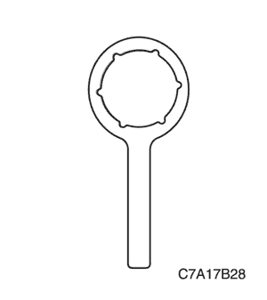
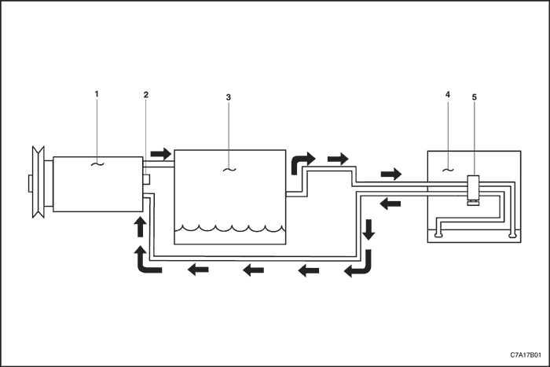
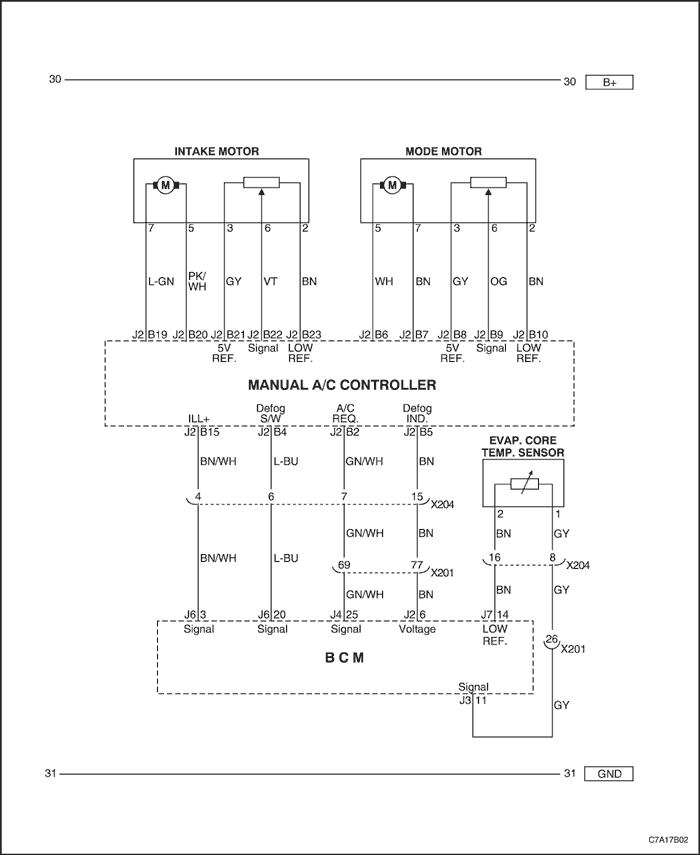
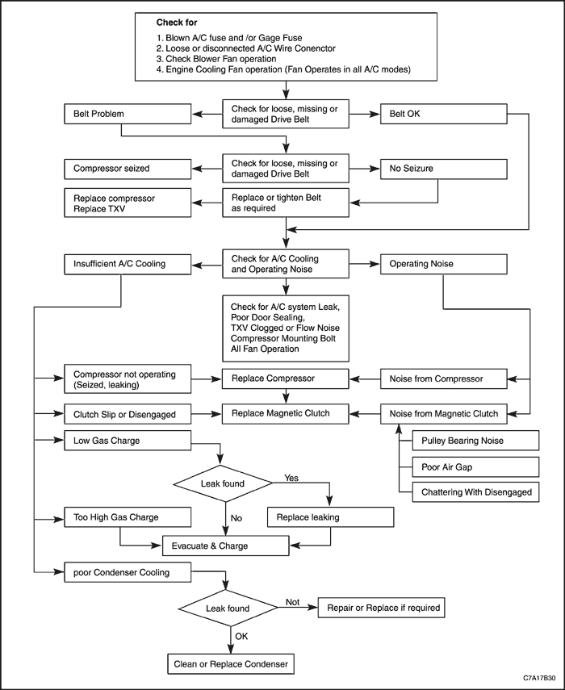

SECCIÓN 7B
SISTEMA DE CALEFACCIÓN, VENTILACIÓN Y AIRE ACONDICIONADO DE CONTROL MANUAL
Precaución: Desconecte el cable negativo de la batería antes de desmontar o instalar cualquier unidad eléctrica o cuando exista la posibilidad de que una herramienta o equipo pueda entrar en contacto con bornes eléctricos expuestos. La desconexión de dicho cable ayudará a evitar lesiones personales y daños al vehículo. La llave de contacto debe estar en posición LOCK a menos que se indique lo contrario.
ESPECIFICACIONES
Capacidad de carga del sistema de aire acondicionado
| Aplicación | Motor Tipo | Descripción |
| Sistema R-134a | FAM 2.4/HFV6 | 660 ± 20 g |
| - Conducción a izquierdas | 2.0 DSL | 520 ± 20 g |
| Aceite refrigerante del sistema de aire acondicionado | Todo | PAG (RL897 o EOIV) |
Especificaciones del compresor SP17
Cilindrada (cc/rev) | 173 |
Diámetro x carrera (mm) | 31.8 x 21.8 |
Número de cilindro | 10 |
Diámetro x longitud (mm) | 114 x 200.5 |
Máx. Velocidad permitida (rpm) | 10,500 |
Peso (w/embrague) (kg) | 6.05 |
Embrague - estándar | 12 V/46 W máx. |
Refrigerante | R134a |
Aceite refrigerante - estándar (g) | 150 |
Tipo de aceite | PAG o equivalente |
Especificaciones de apriete
| Aplicación | N•m | Árbol de transmisión izquierdo | Articulación |
| Tuerca de fijación del conjunto del plato y cubo del embrague | 13.5 | 10 | - |
| Tuerca del racor del manguito del compresor | 16 | 12 | - |
| Tuerca de fijación del racor del manguito de descarga al compresor | 16 | 12 | - |
| Tuerca de fijación del racor del manguito de descarga al condensador | 16 | 12 | - |
| Tornillos de la válvula de expansión | 10 | - | 89 |
| Tuercas de fijación del soporte del ECM | 15 | 11 | - |
| Tornillos de fijación de la parte delantera del compresor al soporte | 23 | 17 | - |
| Tuerca de fijación del tubo de alta presión al conector de la brida del evaporador | 16 | 12 | - |
| Tuerca de fijación del tubo de alta presión al conector del condensador. | 14 | 10 | - |
| Tornillo de la abrazadera del tubo del evaporador | 16 | 12 | - |
| válvula de descarga de presión | 16 | 12 | - |
| Transductor de presión | 7 | - | 62 |
| Tornillos de fijación de la parte trasera del compresor al soporte | 20 | 15 | - |
| Tornillos de fijación del soporte del compresor trasero. | 23 | 17 | - |
| Tornillo de la abrazadera del manguito de aspiración | 16 | 12 | - |
| Tuercas de fijación del racor del manguito de aspiración | 16 | 12 | - |
| Tuercas superiores de fijación del condensador | 4 | - | 35 |
HERRAMIENTAS ESPECIALES
Tabla de herramientas especiales

 
| Útil de sujeción del cubo del embrague |
DIAGRAMAS DE ESQUEMAS Y DIRECCIONES
Sistema A/C - Convencional

- Compresor
- válvula de descarga de presión
- Condensador
- Evaporador
- Válvula de expansión
Diagrama del control manual de A/C

DIAGNÓSTICO
DIAGNÓSTICO GENERAL
Prueba del sistema de refrigeración
Si se sospecha que hay algún problema en el sistema de refrigerante, compruebe lo siguiente:
- Compruebe las superficies exteriores del radiador y de los núcleos del condensador para asegurarse de que el paso de aire no esté obstruido por la suciedad, hojas u otras materias extrañas. Compruebe el espacio entre el condensador y el radiador, así como todas las superficies exteriores.
- Compruebe si hay obstrucciones o retorcimientos en el núcleo del condensador, las mangueras y los tubos.
- Compruebe el funcionamiento del ventilador.
- Compruebe si los conductos de aire presentan fugas u obstrucciones. Un caudal bajo de aire puede indicar que un núcleo del evaporador está obstruido.
- Compruebe si patina el embrague del compresor.
- Compruebe la tensión de la correa de accionamiento.
Procedimiento de comprobación rápida en caso de refrigeración insuficiente
Realice el siguiente "procedimiento por tacto" para hacerse una vaga idea de si el sistema de aire acondicionado dispone de la carga suficiente de Refrigerante-134a. La temperatura del aire debe superar los 21°C (70°F) en la mayoría de modelos.
- Caliente el vehículo. Ponga en marcha el motor a ralentí.
- Abra el capó y todas las puertas.
- Encienda el A/A.
- Coloque el control de temperatura en la posición de máximo frío.
- Coloque el interruptor de velocidad del ventilador en la posición de velocidad máxima.
- "Compruebe al -tacto" la temperatura del tubo de salida del evaporador. El tubo debe estar frío.
- Compruebe si se dan otros problemas. Consulte el apartado "Prueba del sistema del refrigerante" de esta sección.
- Compruebe si hay fugas en el sistema. Consulte el apartado "Prueba de fugas en el sistema de refrigerante" de esta sección. Si detecta una fuga, descargue el sistema y repare la fuga según sea necesario. Después de completar la reparación, vacíe el sistema y vuelva a cargarlo.
- Si no hay fugas, consulte el apartado "Diagnóstico de refrigeración insuficiente" de esta sección.
Relación presión-temperatura del R-134A
| Temperatura °C (°F)* | Presión kPa (lbs/pulg2)* | Temperatura °C (°F)* | Presión kPa (lbs/pulg2)* |
| -8 (17.6) | 113.1 (16.4) | 9 (48.2) | 296.2 (43.0) |
| -7 (19.4) | 121.5 (17.6) | 10 (50.0) | 309.6 (44.9) |
| -6 (21.2) | 130.2 (18.9) | 15 (59.0) | 383.7 (55.7) |
| -5 (23.0) | 139.1 (20.2) | 20 (68.0) | 467.7 (67.8) |
| -4 (24.8) | 148.4 (21.5) | 25 (77.0) | 567.5 (82.3) |
| -3 (26.6) | 157.9 (22.9) | 30 (86.0) | 667.8 (96.9) |
| -2 (28.4) | 167.6 (24.3) | 35 (95.0) | 785.6 (113.9) |
| -1 (30.2) | 177.8 (25.8) | 40 (104.0) | 916.4 (133.0) |
| 0 (32.0) | 188.2 (27.3) | 45 (113.0) | 1 062.2 (154.0) |
| 1 (33.8) | 198.8 (28.8) | 50 (122.0) | 1 222.1 (177.2) |
| 2 (35.6) | 209.9 (30.4) | 55 (131.0) | 1 398.2 (202.8) |
| 3 (37.4) | 221.2 (32.1) | 60 (140.0) | 1 589.6 (230.5) |
| 4 (39.2) | 232.9 (33.8) | 65 (149.0) | 1 799.0 (260.9) |
| 5 (41.0) | 245.0 (35.5) | 70 (158.0) | 2 026.6 (293.9) |
| 6 (42.8) | 257.4 (37.3) | 75 (167.0) | 2 272.2 (329.5) |
| 7 (44.6) | 269.8 (39.1) | 80 (176.0) | 2 544.0 (369.0) |
| 8 (46.4) | 282.9 (41.0) | - | - |
* Todos los valores calculados están redondeados al decimal más próximo.
Gama de temperaturas del evaporador: De -7 a 7°C (19,4 a 44,6°F), las temperaturas representan las temperaturas del gas en el interior del serpentín y no en su superficie. Agregue de 2 a 6°C (4 a 11°F) a las temperaturas del serpentín y del aire exterior.
Gama de temperaturas del condensador: De 45 a 70°C (113°a 158°F), las temperaturas no son temperaturas ambiente. Agregue de 19 a 22°C (34 a 40°F) a las temperaturas ambiente para una adecuada transferencia del calor. A continuación consulte la tabla de presiones.
Ejemplo:
32°C (90°F) temperatura ambiente + 22°C (40°F) = 54°C (130°F) Temperatura del condensador que produce una presión de 1.379 kPa (200 lbs/pulg2), basada en una velocidad del aire de 50 km/h (31 mph). Prueba de fugas en el sistema de refrigerante
Compruebe si hay fugas cada vez que sospeche de una fuga de refrigerante en el sistema. Compruebe también si hay fugas cuando realice una reparación que implique mover las tuberías o las conexiones. Las fugas se encuentran generalmente en los racores del refrigerante o en las conexiones. Las fugas suelen deberse a los siguientes problemas:
- Par de apriete incorrecto.
- Juntas tóricas dañadas.
- Suciedad o pelusa en las juntas tóricas.
Detectores de fugas de líquido
Utilice una solución detectora de fugas de líquido en puntos tales como los racores. Aplique la solución a la zona afectada con el bastoncillo de algodón que viene con la solución. Compruebe la aparición de burbujas. Esto indicará la existencia y la ubicación de cualquier fuga.
En aquellas zonas en que este método no resulte práctico, como en las secciones del evaporador y el condensador, resulta más útil emplear un detector electrónico de fugas.
Detectores electrónicos de fugas
Siga las instrucciones del fabricante para la calibración, funcionamiento y mantenimiento de un detector electrónico de fugas. El estado de la batería es muy importante para la precisión de un modelo portátil. Ajuste el detector al R-134a antes de empezar la prueba.
Aviso: Los detectores electrónicos de fugas son sensibles a las soluciones de lavado del parabrisas, disolventes y productos de limpieza, así como ciertos adhesivos para vehículos. Las superficies deben estar limpias para evitar lecturas falsas. Asegúrese de que todas las superficies estén secas para evitar daños en el detector.
Instrucciones generales para las pruebas
- Siga el circuito completo del sistema de refrigeración.
- Rodee completamente cada junta a 25 - 50 mm (de 1 a 2 pulgadas) por segundo.
- Sujete la punta de la sonda a una distancia de 6 mm (1/4 de pulgada) de la superficie.
- No bloquee la admisión de aire.
- El tono audible cambia de uno a dos clics por segundo a un sonido de alarma continuo si hay una fuga. Ajuste el control de equilibrio para mantener el tono entre uno y dos clics por segundo.
- Compruebe todas las zonas indicadas a continuación, incluso después de haberse confirmado una fuga:
- Entrada y salida del evaporador.
- Entrada y salida del depósito-secador.
- Entrada y salida del condensador.
- Zonas soldadas y estañadas.
- Zonas dañadas.
- Acoplamientos de manguitos.
- Cabezal trasero del compresor.
- Todos los racores y juntas.
Prueba de las conexiones de servicio/válvulas de acceso
Las tapas de estanqueidad protegen las conexiones de servicio. Asegúrese de que estas tapas no se pierdan o se suelten. Utilice siempre la tapa correcta para cada orificio.
Comprobación del núcleo del evaporador
Resulta difícil detectar fugas en el núcleo del evaporador. Compruebe el núcleo del evaporador mediante el siguiente procedimiento:
- Ponga en marcha el ventilador en la posición de velocidad máxima y déjelo en funcionamiento durante al menos 15 minutos.
- Apague el ventilador.
- Espere unos 10 minutos.
- Desmonte la resistencia del motor del ventilador. Consulte la Sección 7A, Sistema de calefacción y ventilación.
- Inserte la sonda detectora de fugas lo más cerca posible del núcleo del evaporador. El detector indicará la existencia de una fuga con un sonido de alarma continuo.
- Utilice una linterna para detectar la presencia de aceite refrigerante en la superficie del núcleo.
Comprobación del retén del eje del compresor
- Sople con aire comprimido de taller detrás y delante del embrague/polea del compresor durante al menos 15 segundos.
- Espere entre uno y dos minutos.
- Compruebe la zona delante de la polea. Si el detector emite un sonido de alarma continuo, entonces hay fuga.
Diagnóstico del sistema de refrigerante/compresor SP
Los problemas derivados del aire acondicionado son principalmente de tres tipos: Fuga de aceite/refrigerante, ruido durante el funcionamiento y refrigeración insuficiente.
Para un mantenimiento adecuado del sistema de A/A, consulte los siguientes diagnósticos.
